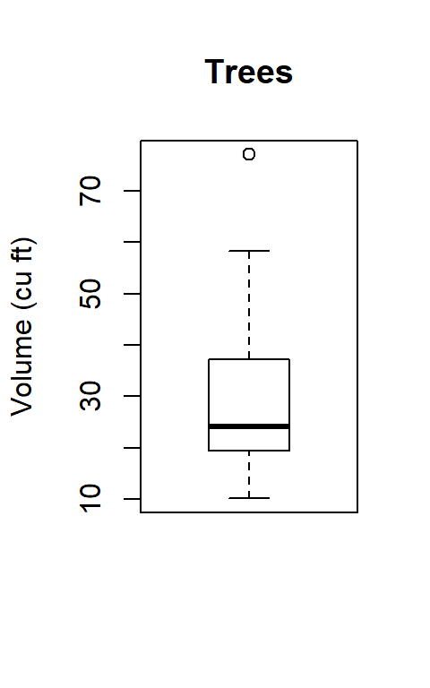
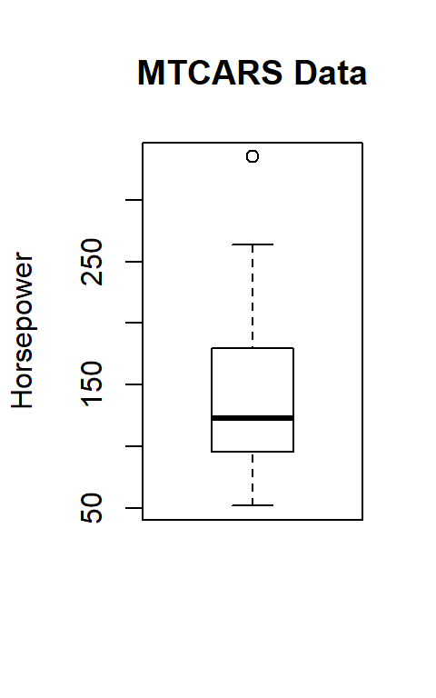
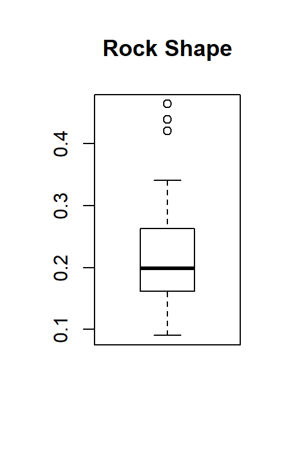
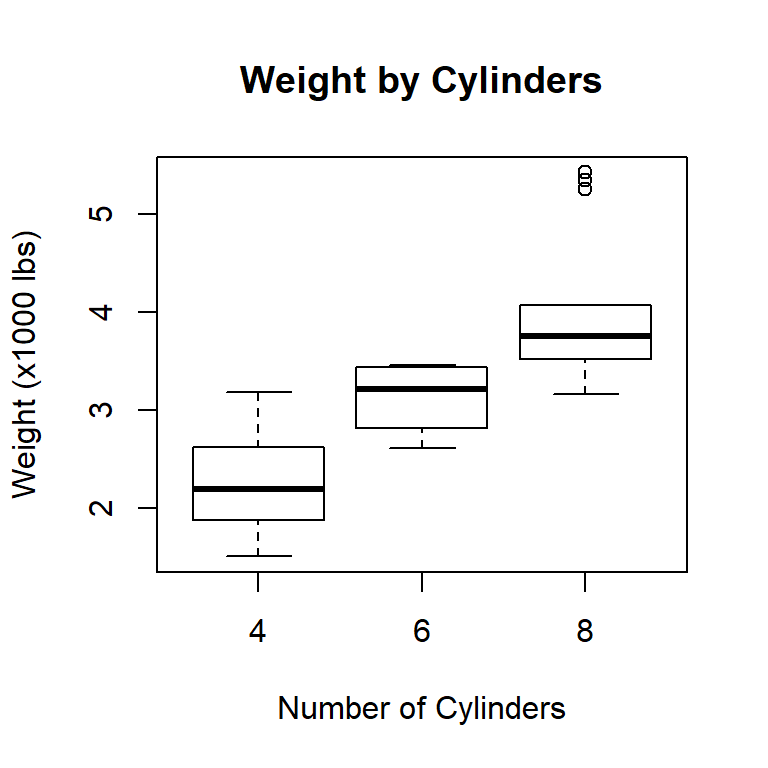

Lab 4 Visualizing Descriptives
4.1 Introduction
R makes it easy to calculate various data descriptives, as covered in the dispersion tutorial; however, most people find it easier to understand data descriptives when those data are presented graphically. Fortunately, R has a great graphic tool for visualizing data descriptives: Boxplot (sometimes called a “Box and Whisker” plot). A Boxplot graphically illustrates Q1, the mean, the median, Q3, outlier boundaries, and outliers (if any are present).
4.2 About Visualizations
This site includes several tutorials that are focued on data visualization because it is a critically important tool for analysis. Visualizations are useful in two different phases of the analysis process: exploration and explanation. In the exploration phase, researchers are looking for interesting relationships in the data and those relationships are often difficult to detect in a table full of numbers but a visualization makes them instantly clear. As an example, here are two ways to look at the Volume vector in the trees data frame.
#> [1] 10.3 10.3 10.2 16.4 18.8 19.7 15.6 18.2 22.6 19.9 24.2 21.0 21.4 21.3
#> [15] 19.1 22.2 33.8 27.4 25.7 24.9 34.5 31.7 36.3 38.3 42.6 55.4 55.7 58.3
#> [29] 51.5 51.0 77.0The above table shows the measured volume for 31 Black Cherry Trees. Researchers looking at these numbers would not be able to detect very much. However, a simple box plot reveals a few interesting details, such as the presence of one upper outlier and that the data are positively skewed (the dark “median” line is low in the box).

Visualizations like this make it easy to detect a patterns that are not obvious from the data table and researchers commonly use these types of visualizations in the exploratory phase of analysis. In the explanatory phase, where research findings are revealed to the general public, different visualizations that are easier to understand are more appropriate. Researchers must carefully consider the many types of visualizations and which are most useful for exploration or explanation to be certain that the visualizations help rather than hinder understanding.
4.3 Boxplots
Following is the summary data for hp from the mtcars data frame along with the boxplot for that same data.
#> Min. 1st Qu. Median Mean 3rd Qu. Max.
#> 52.0 96.5 123.0 146.7 180.0 335.0
In the boxplot, the median is indicated by a dark line at 123, Q1 is 96.5 (the lower edge of the box) and Q3 is 180 (the upper edge of the box). The following equations show how the “whiskers” are calculated. They indicate the limits for outliers, so any data that lie outside those whiskers are outliers and are indicated by a small circle on the boxplot.
\[ \begin{aligned} LowerBoundary &= Q1 - (1.5 * IRQ) \\ LowerBoundary &= 96.5 - (1.5 * 83.5) \\ LowerBoundary &= 96.5 - 125.25 \\ LowerBoundary &= 0 \end{aligned} \]
Since the smallest value in the vector, 52, is larger than the calculated lower boundary, 0, the lower whisker is placed at 52.
\[ \begin{aligned} UpperBoundary &= Q3 + (1.5 * IRQ) \\ UpperBoundary &= 180.0 + (1.5 * 83.5) \\ UpperBoundary &= 180.0 + 125.25 \\ UpperBoundary &= 305.25 \end{aligned} \]
Since the calculated upper boundary, 305.25, is smaller than the largest value in the vector, 335.0, the upper whisker is placed at the largest data value that is smaller than or equal to 305.25, or 264 for this data vector.
The circle above the boxplot represents an outlier, which is 335 in this vector. If the data are a normal distribution then the whiskers will usually enclose all values in the vector and outliers will be rare.
4.3.1 Demonstration: Boxplots
The following script generates four different boxplots for four different vectors in the rock data frame.
- Line 2: Print the summary information for the area vector.
- Line 3: Create the boxplot for area. Note that the boxplot includes a
mainattribute which adds a title above the boxplot. - Lines 5-15 These are repetitions of Lines 1-3 for three other vectors in the rock data frame.
This demonstration contains four different examples of generating a summary and a boxplot.
Given these four boxplots, rock$peri has the most symmetrical data since the box and whiskers are fairly equally distributed around the median, rock$perm is the most skewed since so much of the plot is above the median, and rock$shape has three upper outliers.
4.3.2 Guided Practice: Boxplot
Using the iris data frame, create a boxplot for Sepal.Length.
4.3.3 Activity: Boxplot
Using the cafe data frame, generate a boxplot for age. Copy/paste the boxplot in the deliverable document for this lab.
4.4 Outliers
It is useful to consider data observations that are far outside the “normal” in any given vector. For example, imagine a neighborhood where the houses all cost about $150,000. Suppose someone wins a lottery and decides to build a $500,000 house in that same neighborhood. The value of that house would be an outlier in a vector that contains the house values in the neighborhood; that is, it would be outside the “average” house value. Outliers are important when discussing data since they tend to skew certain types of measures.
Statistically, outliers are defined as values that lie outside boundaries that are 1.5 times the Inter-Quartile Range (IQR) below the first quartile or above the third quartile. R includes a function that displays the values used to create a boxplot, including outliers, so the values of any outliers can be easily determined. As an example, consider the boxplot for the shape vector in the rock data frame that was created above.

4.4.1 Demonstration: Outliers
To determine what values R used to generate a boxplot plot, the command boxplot.stats(rock$shape) is executed and produces this output.
This output has four different lines:
$stats These are the locations for the five horizontal lines in the plot, so the lower whisker is at 0.0903 on the y-axis, Q1 (the lower edge of the box) is at 0.1621 on the y-axis, the median (the heavy line in the middle of the box) is at 0.1988 on the y-axis, Q3 (the upper edge of the box) is at 0.2626 on the y-axis, and the upper whisker is at 0.3412 on the y-axis.
$n is the number of observations in the vector, or 48 in this case since 48 trees were measured.
$conf is the value on the y-axis that would be used to mark a 95% confidence level, but that statistic is not used in this lab.
$out These are the values of the outliers and the rock$shape vector has three: 0.438712, 0,464125, and 0.420477. Thus, to find the outliers of a vector all that is needed is to use the fourth output line of the
boxplot.stats()function. If there are no outliers then that line reports numeric(0) to indicate that there are zero outliers.
4.4.2 Guided Practice: Outliers
Using the iris data frame, use boxplot.stats to see if Sepal.Width has any outliers.
4.4.3 Activity: Outliers
Using the cafe data frame, find the outliers for miles. Record those outliers in the deliverable document for this lab.
4.5 Grouped Boxplots
Boxplots become much more useful when more than one data item is plotted side-by-side for comparison. For example, the following boxplots are helpful in determining if there is a difference in automobile weight by the number of cylinders in the engine.

By comparing the three boxplots it is easy to see that the more cylinders an engine has then the more the automobile weighs since the plots tend to be “higher” as the number of cylinders increases. Also notice that the plot for 8-cylinder cars does not have an upper whisker since it is exactly the same as Q3 but it does include outliers. It is also interesting to note that the whiskers for the three plots overlap, indicating, for example, that some 4-cylinder cars are heavier than some 6-cylinder cars.
Color can be added to a boxplot to make it more pleasing and easier to understand. More information can be found in the About Colors section in the appendix.
4.5.1 Demonstration: Grouped Boxplots With Color
Grouped boxplots are easy to create with R and the following script generates three examples.
- Lines 2-5: This is one long command that is broken over several lines to make it easier to read. Note that R does not require any sort of special “line continuation” character at the end of each line. As long as the parentheses started after the
boxplotkeyword does not close then R will continue reading that command on the next line. - Line 2: Temp ~ Month This tells R to calculate the boxplot for the Temperature variable but group those temperatures by Month. It is important to remember the order for these two variables. First is the continuous data that should be analyzed and second is the grouping variable.
- Line 3: data = airquality In previous tutorials, the data frame name was prepended to the variable name using the
$operator. However, for simplicity, many R functions are designed to enter only the vector names and then specify the data frame later in the function. In this case, the airquality data frame is identified as the source for the two variables being plotted. - Line 4: main = “Temp By Month” This is the main title for the boxplot and is automatically printed in large font abovethe boxplot. R has a number of other formatting options available and several will be covered in later labs.
- Line 5: col = rainbow(8) This sets the color palette to rainbow and instructs R to use eight colors from that palette. It is often useful to experiment with the number of colors requested from the palette since the colors selected will change depending on the number requested and some combinations may be more useful than others.
- Lines 7-11: These are similar to Lines 2-5 but use the warpbreaks data frame. Notice that selecting the “heat” color palette is slightly different than the rainbow palette used above.
- Lines 13-18: These lines are similar to Lines 7-11 but use the chickwts data frame. A new attribute was specified: las = 2. For this boxplot the groups are names of chicken feed rather than numbers or single letters. When those names are printed horizontally they “run into each other” and become unreadable. The las = 2 specification turns those labels 90° so they do not interfere with each other.
This demonstration contains three different examples of generating grouped boxplots with color.
4.5.2 Guided Practice: Grouped Boxplot With Color
Using the morley data frame, generate a grouped boxplot where Speed is grouped by Expt. The boxplot should meet these specifications:
- Title: Morley Experiment
- Color: five colors from the terrain.colors palette
4.5.3 Activity: Grouped Boxplot With Color
Using the cafe data frame, generate a boxplot of length when grouped by meal to see if there is any difference in the length of the meal by the type of meal eaten (breakfast, lunch, dinner, other). The boxplot should meet these specifications:
- Title: Grouped Boxplot
- Color: four colors from the topo.colors palette
Copy/paste the boxplot in the deliverable document for this lab.
4.6 Deliverable
Complete the activities in this lab and consolidate the responses into a single document. Name the document with your name and “Lab 4,” like “George Self Lab 4” and submit that document for grade.